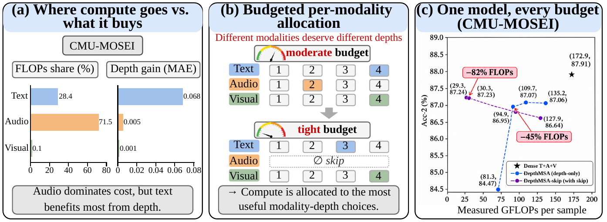
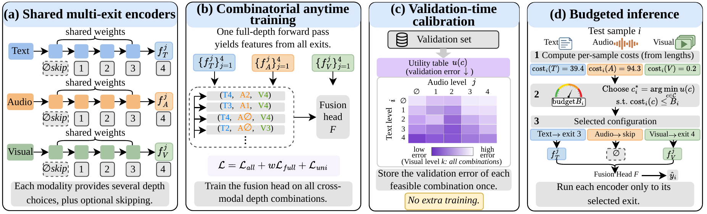
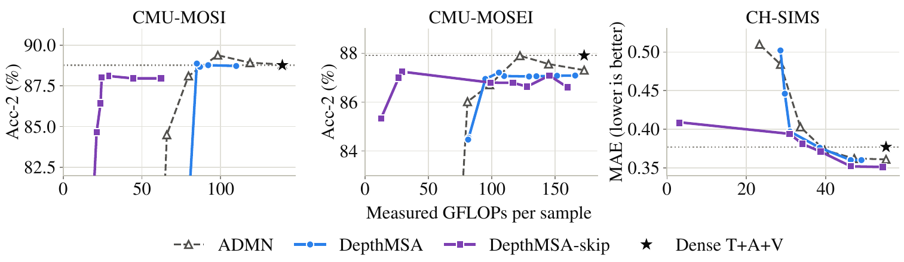
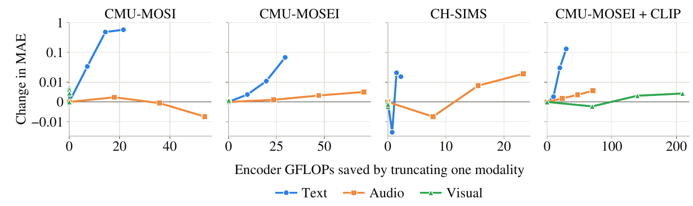
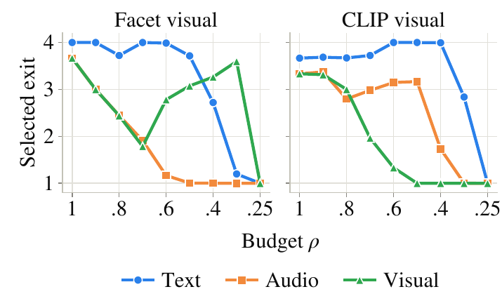

State-of-the-art multimodal sentiment analysis (MSA) models rely on large pretrained encoders, yet typically process every modality to its full depth, regardless of its computational cost or predictive contribution. This raises a fundamental question: how should limited computation be allocated across modalities to preserve predictive performance? We reveal a substantial mismatch between the computational cost of modality encoders and the predictive benefit of processing them more deeply, suggesting that different modalities require different encoding depths. However, enabling heterogeneous depths introduces a key challenge: representations extracted at different depths must still be effectively fused. To address this, we propose DepthMSA, a budget-aware framework that supports flexible modality depths within a single MSA model. Specifically, we introduce combinatorial anytime training, which supervises the fusion head across all cross-modal depth combinations using a single full-depth encoder pass. At inference, a training-free, cost-aware allocator selects the configuration with the lowest validation-calibrated error under a sample-specific FLOPs budget. On CMU-MOSEI, DepthMSA maintains accuracy within one percentage point of the full-depth model while reducing measured FLOPs by 45%, or by 82% with a separately trained skip-enabled variant. When a CLIP visual encoder dominates computation, the allocation shifts toward reducing visual depth, achieving 56% fewer FLOPs at unchanged accuracy. Compared with ADMN, an adaptive layer-allocation method that trains a controller for each budget, the skip-enabled variant reaches its accuracy with 3.2× fewer FLOPs and lower latency, without any per-budget training.

The cost of a modality encoder and the benefit of running it deeper do not match, so modalities should not all be encoded to the same depth.
One full-depth encoder pass supervises the fusion head on every cross-modal depth combination, so features taken at different depths still fuse well.
A validation-calibrated allocator selects the combination with the lowest expected error that fits each sample's FLOPs budget, with no budget-specific retraining.



@article{wang2026depthmsa,
title = {DepthMSA: Combinatorial Training and Budget-Aware Depth Allocation
for Multimodal Sentiment Analysis},
author = {Wang, Pan and Peng, Jie and Li, Zhimin and Chen, Jingxian and Ji, Hui
and Yang, Huanrui and Zhou, Pengfei and Chen, Tianlong and Hu, Jingtong},
journal = {arXiv preprint},
year = {2026}
}